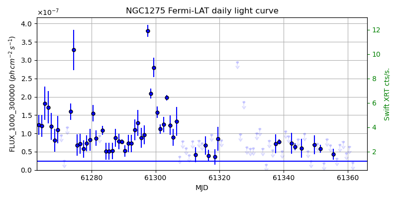
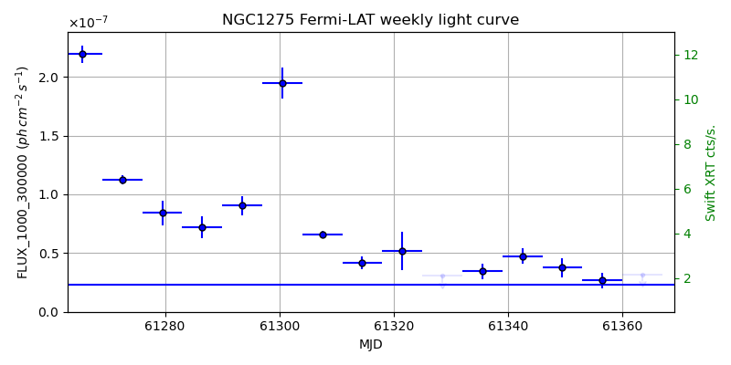

LAT Lightcurve site: https://fermi.gsfc.nasa.gov/ssc/data/access/lat/msl_lc/source/NGC_1275
Swift site: https://www.swift.psu.edu/monitoring/source.php?source=3C84
NED: Query
Time of last update of this page: UT: 2026-11-20 16:13 (MJD: 61364.676)
| Property | Value |
|---|---|
| R.A. | 3:19:48.24 |
| Dec. | 41:30:43.2 |
| z | 0.018 |
| 3FGL SpectrumType | LogParabola |
| 3FGL PL Index | |
| 3FGL Flux_100_300000 | 2.38e-07 1 / (s cm2) |
| 3FGL Flux_1000_300000 | 2.34e-08 1 / (s cm2) |
| 3FGL Flux >200 GeV | 3.81e-11 1 / (s cm2) |
| 3FGL Extrap. Crab >200 GeV | 0.16 |
| 3FGL Flux After EBL Absorption >200GeV | 3.56e-11 1 / (s cm2) |
| 3FGL EBL Crab Fraction >200GeV | 0.15 |
| MJD | dMJD | Flux | dFlux | Frac3FGL | FracCrab>200GeV | EBLFracCrab>200GeV |
|---|---|---|---|---|---|---|
| 61359.50 | 0.50 | 4.41e-07 | 0.00e+00 | 0.00 | 0.00 | 0.00 |
| 61360.50 | 0.50 | 5.46e-07 | 5.49e-08 | 2.30 | 0.37 | 0.35 |
| 61361.50 | 0.50 | 8.89e-07 | 0.00e+00 | 0.00 | 0.00 | 0.00 |
| 61362.50 | 0.50 | 9.34e-06 | 0.00e+00 | 0.00 | 0.00 | 0.00 |
| 61363.50 | 0.50 | 4.77e-06 | 0.00e+00 | 0.00 | 0.00 | 0.00 |

| MJD | dMJD | Flux | dFlux | Frac3FGL | FracCrab>200GeV | EBLFracCrab>200GeV |
|---|---|---|---|---|---|---|
| 61328.50 | 3.50 | 7.16e-07 | 0.00e+00 | 0.00 | 0.00 | 0.00 |
| 61335.50 | 3.50 | 4.23e-07 | 2.19e-08 | 1.78 | 0.29 | 0.27 |
| 61342.50 | 3.50 | 4.37e-07 | 2.62e-08 | 1.84 | 0.30 | 0.28 |
| 61349.50 | 3.50 | 3.61e-07 | 2.05e-08 | 1.52 | 0.25 | 0.23 |
| 61356.50 | 3.50 | 3.01e-07 | 5.05e-08 | 1.26 | 0.20 | 0.19 |

| MJD | dMJD | Flux | dFlux | Frac3FGL | FracCrab>200GeV | EBLFracCrab>200GeV |
|---|---|---|---|---|---|---|
| 61359.50 | 0.50 | 4.64e-08 | 0.00e+00 | 0.00 | 0.00 | 0.00 |
| 61360.50 | 0.50 | 6.36e-08 | 0.00e+00 | 0.00 | 0.00 | 0.00 |
| 61361.50 | 0.50 | 1.96e-08 | 0.00e+00 | 0.00 | 0.00 | 0.00 |
| 61362.50 | 0.50 | 1.86e-06 | 0.00e+00 | 0.00 | 0.00 | 0.00 |
| 61363.50 | 0.50 | 1.28e-06 | 0.00e+00 | 0.00 | 0.00 | 0.00 |

| MJD | dMJD | Flux | dFlux | Frac3FGL | FracCrab>200GeV | EBLFracCrab>200GeV |
|---|---|---|---|---|---|---|
| 61328.50 | 3.50 | 3.05e-08 | 0.00e+00 | 0.00 | 0.00 | 0.00 |
| 61335.50 | 3.50 | 3.46e-08 | 6.47e-09 | 1.48 | 0.24 | 0.22 |
| 61342.50 | 3.50 | 4.72e-08 | 6.67e-09 | 2.02 | 0.33 | 0.31 |
| 61349.50 | 3.50 | 3.77e-08 | 8.15e-09 | 1.61 | 0.26 | 0.24 |
| 61356.50 | 3.50 | 2.67e-08 | 6.53e-09 | 1.14 | 0.18 | 0.17 |
--------------------------------------------------------- Using user-supplied coords: 3:19:48.24 41:30:43.2 2000 --------------------------------------------------------- FLWO UT night of: 2026-11-21 Local Sid. @ Midnight: 03:37 Sunset (-15.0) (local, UT): 18:33 01:33 Sunrise (-15.0) (local, UT): 05:47 12:47 Moonrise (local, UT): Moonset (local, UT): 03:40 10:40 Moon phase: 0.85 --------------------------------------------------------- AzTime LSID UT Obj_el Obj_az Mn_el Mn_az Sep. --------------------------------------------------------- 18:33 22:09 01:33 28.7 56.5 47.9 117.4 50.1 19:03 22:39 02:03 34.1 58.3 53.3 125.0 49.9 19:33 23:09 02:33 39.6 59.8 58.2 134.7 49.6 20:03 23:39 03:03 45.1 60.9 62.3 146.9 49.4 20:33 00:09 03:33 50.7 61.4 65.1 162.1 49.2 21:03 00:39 04:03 56.3 61.2 66.3 179.7 49.1 21:33 01:09 04:33 61.9 59.9 65.4 197.5 48.9 22:03 01:39 05:03 67.4 56.8 62.9 213.2 48.7 22:33 02:09 05:33 72.5 50.3 59.0 225.9 48.5 23:03 02:39 06:03 77.0 37.1 54.2 235.9 48.3 23:33 03:09 06:33 79.8 12.5 48.9 243.9 48.1 00:03 03:39 07:03 79.4 341.0 43.2 250.4 47.9 00:33 04:10 07:33 76.1 319.1 37.3 255.9 47.7 01:03 04:40 08:03 71.5 307.9 31.2 260.7 47.4 01:33 05:10 08:33 66.2 302.3 25.1 265.1 47.2 02:03 05:40 09:03 60.7 299.7 19.0 269.2 47.0 02:33 06:10 09:33 55.1 298.6 12.9 273.0 46.8 03:03 06:40 10:03 49.5 298.6 6.8 276.9 46.5 03:33 07:10 10:33 43.9 299.3 1.0 280.7 46.3 04:03 07:40 11:03 38.3 300.5 -4.9 284.7 46.0 04:33 08:10 11:33 32.9 302.0 -11.1 288.8 45.8 05:03 08:40 12:03 27.5 304.0 -16.8 293.2 45.5 05:33 09:10 12:33 22.3 306.2 -22.3 298.1 45.2 05:47 09:25 12:47 19.8 307.4 -24.8 300.5 45.1 --------------------------------------------------------- Dark hours >55 deg.: 0.00